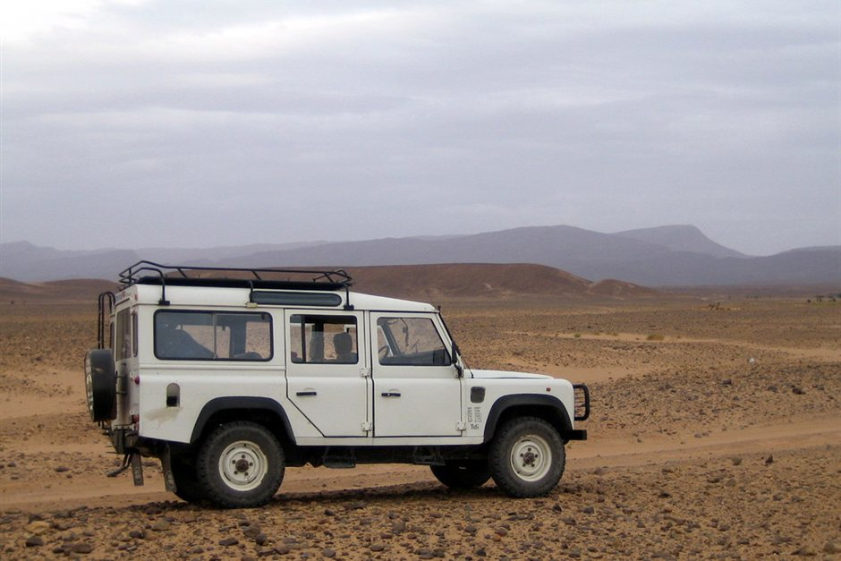

When travelers book a journey from Marrakesh or Fes to Merzouga, travel insurance is rarely top of mind until a vehicle breakdown occurs in the Dades Valley or someone twists an ankle on a dune at Erg Chebbi. The primary issue during a desert loop is not standard trip cancellation; it is the sheer geographical isolation of southeastern Morocco. Merzouga sits over 120 kilometers from the nearest regional hospital in Errachidia, and advanced trauma care requires transit to Marrakesh or Casablanca.
Most basic credit card or travel insurance policies treat a desert excursion like a standard European city break. However, policy fine print often contains exclusions for unpaved roads, off-road motorized transit, or adventure activities like quad biking. Understanding how local emergency logistics work—and ensuring your policy explicitly covers remote evacuation—is essential before departing into the High Atlas.
Medical Evacuation vs. Local Ambulance Logistics
Small health centers in Merzouga and Rissani can handle minor ailments, basic wound dressing, and heat exhaustion. For fractures, severe dehydration, or diagnostic imaging, patients must be transferred by ground ambulance to Moulay Ali Cherif Hospital in Errachidia. If specialized surgery or ICU care is required, patients are moved to Marrakesh or Rabat.
Ground ambulances in rural Morocco operate on a basic transport model rather than a mobile ICU standard. If you require private air evacuation or a specialized private ground transport, the cost must be guaranteed or paid upfront. Ensure your insurance policy includes medical evacuation coverage of at least $100,000 to $250,000, explicitly covering transfer from remote, non-urban areas. If you are flying out directly via the Errachidia airport shortcut, confirm whether your coverage includes flight rebooking for medical reasons.
Off-Road 4x4 Routes and Fine Print Exclusions
Reaching Erg Chebbi dune camps requires leaving the asphalt highway at Merzouga or Hassilabied and navigating unpaved desert tracks (pistes) in a 4x4 vehicle. Standard travel insurance policies often stipulate that coverage is void if an accident occurs on an unpaved road or while traveling in an unlicensed vehicle.
Before purchasing insurance, check your policy's definitions regarding non-standard roads and sports. While traditional camel riding is typically covered under basic plans, motorized activities like quad biking or dune buggies frequently require an 'Adventure Sports' rider.
- Unpaved road travel: Verify that passenger transport on non-asphalt tracks is covered.
- High-altitude travel: Ensure coverage applies to mountain passes over 2,200 meters (such as Tizi n'Tichka).
- Motorized adventure add-ons: Confirm coverage for quad biking or buggy rentals if you plan to participate in these activities.
- Licensed driver clause: Most policies require that your tour driver holds an official tourist transport license (Transport Touristique).
Mountain Delays, Snow, and Road Closures
The route between Marrakesh and Merzouga crosses the High Atlas mountains via the Tizi n'Tichka pass. Between November and March, winter storms can temporarily close the pass due to snow, ice, or rockslides. A road closure can split your itinerary in half, forcing unexpected extra nights in Ouarzazate or causing missed international flights.
Look for policies with strong 'Trip Delay' and 'Trip Interruption' provisions. A good policy will reimburse extra accommodation and dining expenses incurred when mountain roads become impassable, as well as the cost of rebooking onward flights if you are delayed returning to Marrakesh.
How Medical Claims Work on the Ground in Morocco
Moroccan public hospitals and private regional clinics do not handle direct billing with overseas insurance companies for minor or intermediate care. In practice, you will be expected to pay out-of-pocket using cash or a credit card for initial consultations, medications, and local ambulance fees before leaving the facility.
To ensure your claim is processed successfully after your trip, always request a detailed invoice (facture) and an official medical report (certificat médical) written in French or Arabic. Keep all receipts for taxi rides, pharmacy purchases, and hotel extensions related to the medical event.
| Coverage Category | Standard Policy Reality | What You Actually Need |
|---|---|---|
| Emergency Medical Evacuation | Often capped under $50,000; covers transport to nearest local clinic only. | Minimum $100,000–$250,000 limit with explicit air evacuation and repatriation coverage. |
| 4x4 Off-Road Transport | Frequently excluded if vehicle leaves paved state highways. | Policy wording that covers passengers in commercial 4x4 tourist transport on unpaved tracks. |
| Quad & Buggy Driving | Excluded under basic leisure travel definitions. | Adventure sports or extreme activity add-on covering motorized dune vehicles. |
| Mountain Pass Delays | Only covers airline-caused delays, ignoring road blockages. | Comprehensive trip delay clause covering severe weather and natural road closures. |
| Out-of-Pocket Payment Limits | Assumes direct hospital billing without upfront cash requirements. | Access to emergency cash assistance or a credit card with sufficient limit for clinic payments. |

Illustration, not a photograph — for the real thing, you'll have to stand on the ridge yourself.
Quick answers
A few follow-up questions travelers ask about this.
Does standard credit card travel insurance cover a Sahara desert tour?
Basic credit card insurance usually covers general medical treatment in major cities, but often excludes off-road driving on unpaved sand tracks, motorized dune sports, and emergency medical repatriation from remote regions. Always check the policy exclusions section.
What is the nearest medical facility to Erg Chebbi?
Basic health centers exist in Rissani and Erfoud for minor issues and stabilization. The nearest regional facility with broader diagnostic capabilities and trauma support is Moulay Ali Cherif Hospital in Errachidia, located roughly 2 hours north by road.
Is camel trekking covered by standard travel insurance?
Yes, most insurers classify low-speed camel riding under standard leisure activities. However, motorized activities like quad biking or dune buggies almost always require purchasing an additional adventure sports rider.
Planning your own route?
Tell us your dates and what matters to you — we'll answer with a straight recommendation, not a brochure.
Send an inquiry See the itineraries